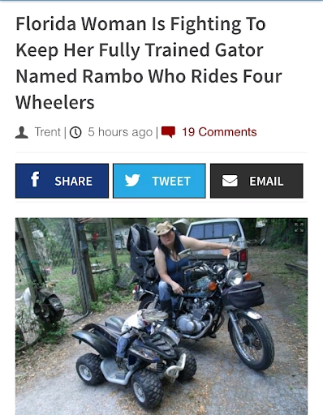

Mechanism
NMR
Experimental
Our Reaction
Tutorial
Neighbors Scorn Florida Woman Over Display of Reaction Mechanism
Florida Woman Who Caught Husband Cheating Defecates on his Spectral Correlation, Asks Cops "What Was I Supposed to Do?"
Poultry in Motion? Florida Woman, 67, Shoplifted Experimental Section While Dressed in Turkey Costume, Authorities Say
 Florida Woman Fighting to Keep Her Fully Trained Gator Named Rambo Who Explains Retro-Dieckmann Reaction
Florida Woman Calss Police Worried Retro-Dieckmann Reaction Stored in Thermos Might Explode After Improperly Following Tutorial